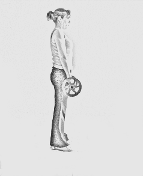

Tres claves:
1. Posición de partida correcta: debemos colocarnos muy muy (pero muy) cerca de la barra. Metemos los pies por debajo, y la barra debe caer a mitad del pie (sobre el empeine, básicamente). Además, las puntas de los pies deben mirar ligeramente hacia fuera.
2. Agarramos la barra y acercamos las pantorrillas hacia ella. De este modo las rodillas se flexionan ligeramente.
3. Sacamos el pecho hacia fuera. Este es el quid de la cuestión: la mayoría de las veces lo que solemos hacer es llevar las caderas hacia abajo, y lo que esto provoca es que elevemos la barra hacia delante y no hacia arriba de forma vertical, que es la realización correcta del peso muerto. Imaginad que lleváis un faro en el pecho y que queréis iluminar vuestra imagen en el espejo que tengáis delante.
Info Completa